기준: 최종 카탈로그 08.11 최종본. 모델별 제품이미지 = 카탈로그 "제품이미지" 영역에서 개별 추출(설치사진 미사용). 모델 전용 이미지=모델 고유 렌더, 공통 이미지=카탈로그가 변형 모델에 공통 제공한 1 이미지. warn=카탈로그 자체 불일치(needs_check).
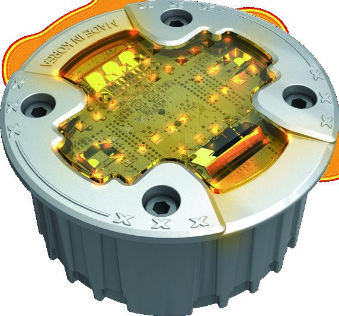
ECO26-138BWØ138 LED 도로표지병 · 배터리형식별번호 26158540크기 Ø138mm × 68mm소비전력 -카탈로그 6-7P / PDF 4공통 이미지ok
ECO26-138BYØ138 LED 도로표지병 · 배터리형식별번호 26158539크기 Ø138mm × 68mm소비전력 -카탈로그 6-7P / PDF 4공통 이미지ok
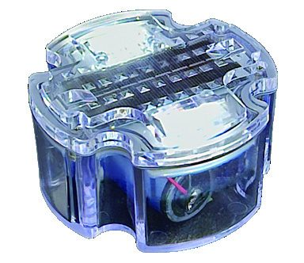
ECO26-138HWØ138 LED 도로표지병 · 하이브리드형식별번호 26158537크기 Ø138mm × 68mm소비전력 -카탈로그 6-7P / PDF 4공통 이미지ok
ECO26-138HYØ138 LED 도로표지병 · 하이브리드형식별번호 26158538크기 Ø138mm × 68mm소비전력 -카탈로그 6-7P / PDF 4공통 이미지ok
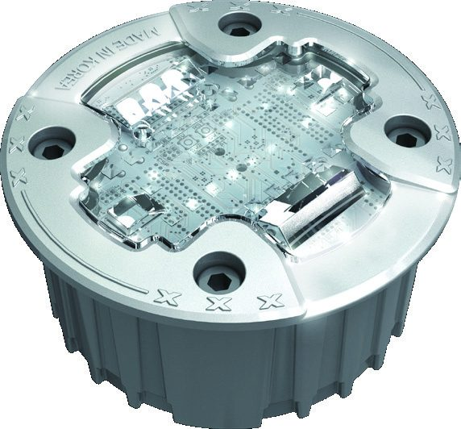
ECO26-138SWØ138 LED 도로표지병 · 태양광형식별번호 26151915크기 Ø138mm × 68mm소비전력 -카탈로그 8-9P / PDF 5공통 이미지ok
ECO26-138SYØ138 LED 도로표지병 · 태양광형식별번호 26151916크기 Ø138mm × 68mm소비전력 -카탈로그 8-9P / PDF 5공통 이미지ok
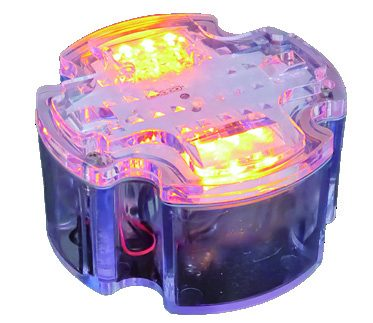
ECO-25RS113-BWØ138 도로표지병 모듈교체용 (Ø113)식별번호 25740381크기 Ø113mm × 67mm소비전력 -카탈로그 8-9P / PDF 5공통 이미지ok
ECO-25RS113-BYØ138 도로표지병 모듈교체용 (Ø113)식별번호 25740380크기 Ø113mm × 67mm소비전력 -카탈로그 8-9P / PDF 5공통 이미지ok
ECO-25RS113-HWØ138 도로표지병 모듈교체용 (Ø113)식별번호 26372354크기 Ø113mm × 67mm소비전력 -카탈로그 8-9P / PDF 5공통 이미지ok
ECO-25RS113-HYØ138 도로표지병 모듈교체용 (Ø113)식별번호 26372355크기 Ø113mm × 67mm소비전력 -카탈로그 8-9P / PDF 5공통 이미지ok
ECO26-113SWØ138 도로표지병 모듈교체용 (Ø113)식별번호 26151913크기 Ø113mm × 67mm소비전력 -카탈로그 8-9P / PDF 5공통 이미지ok
ECO26-113SYØ138 도로표지병 모듈교체용 (Ø113)식별번호 26151914크기 Ø113mm × 67mm소비전력 -카탈로그 8-9P / PDF 5공통 이미지ok
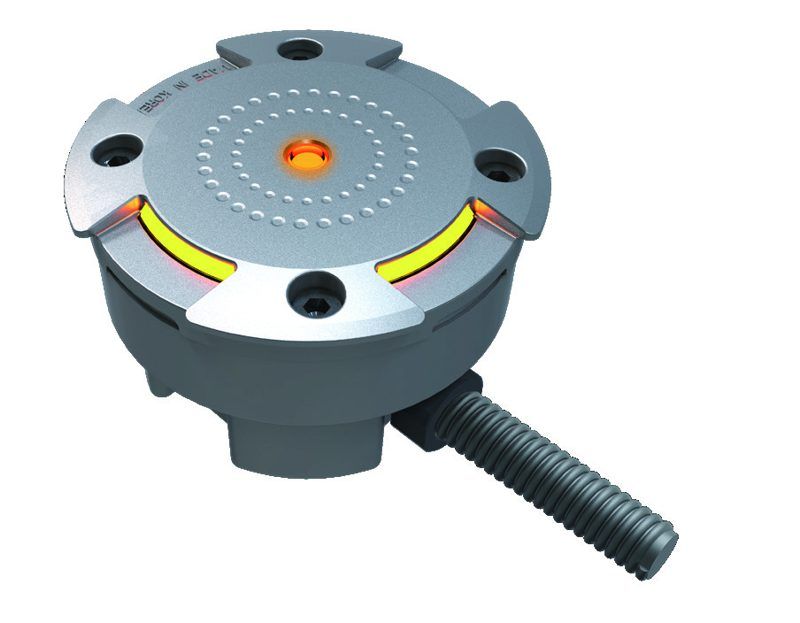
ECO25-RS125-CWØ125 LED 도로표지병 · 전기형식별번호 25737635크기 Ø125mm × 80mm소비전력 최대 7W (조정 가능)카탈로그 10-11P / PDF 6공통 이미지ok
ECO25-RS125-CYØ125 LED 도로표지병 · 전기형식별번호 25737636크기 Ø125mm × 80mm소비전력 최대 7W (조정 가능)카탈로그 10-11P / PDF 6공통 이미지ok
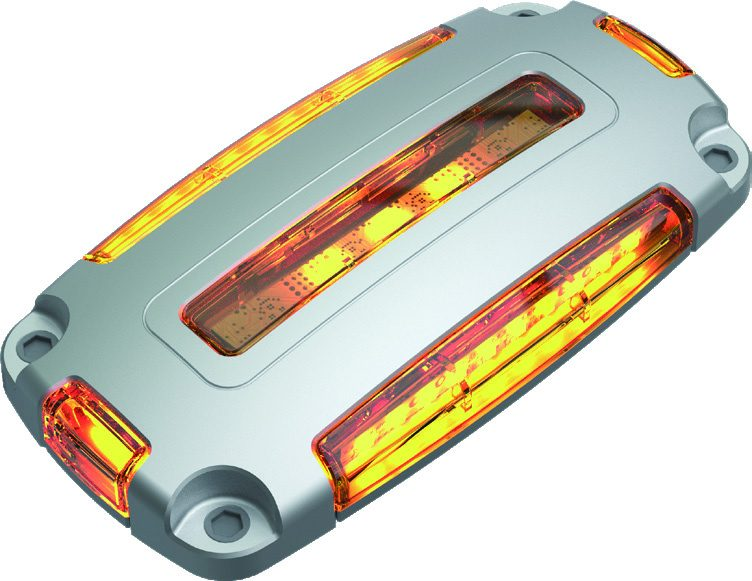
ECO-RS196-RW196 LED 도로표지병 · 전기형식별번호 25543620크기 Ø196mm × 101mm × 29mm소비전력 최대 6W (조정 가능)카탈로그 10-11P / PDF 6공통 이미지ok
ECO-RS196-RY196 LED 도로표지병 · 전기형식별번호 25543621크기 Ø196mm × 101mm × 29mm소비전력 최대 6W (조정 가능)카탈로그 10-11P / PDF 6공통 이미지ok
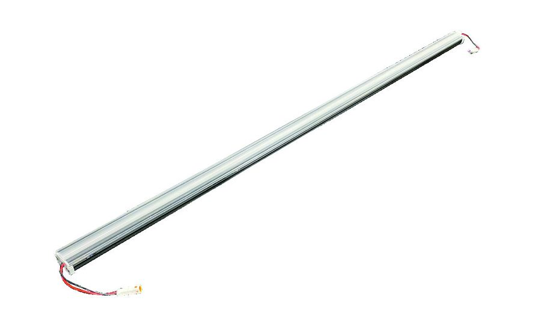
ECO-LLBA1200LED 라인조명 · 플렉시블 조명식별번호 26084710크기 1,000×31×27소비전력 15W카탈로그 18-19P / PDF 10공통 이미지ok
ECO-LLBA1000LED 라인조명 · 플렉시블 조명식별번호 26084709크기 1,000×18×9소비전력 13W카탈로그 18-19P / PDF 10공통 이미지ok
ECO-LLFLEX1000LED 라인조명 · 플렉시블 조명식별번호 26084708크기 1,000×15×4소비전력 7W카탈로그 18-19P / PDF 10공통 이미지ok
ECO-LLFLEX1000-10LED 라인조명 · 플렉시블 조명식별번호 26316681크기 1,000×10×10mm소비전력 10W카탈로그 18-19P / PDF 10공통 이미지ok
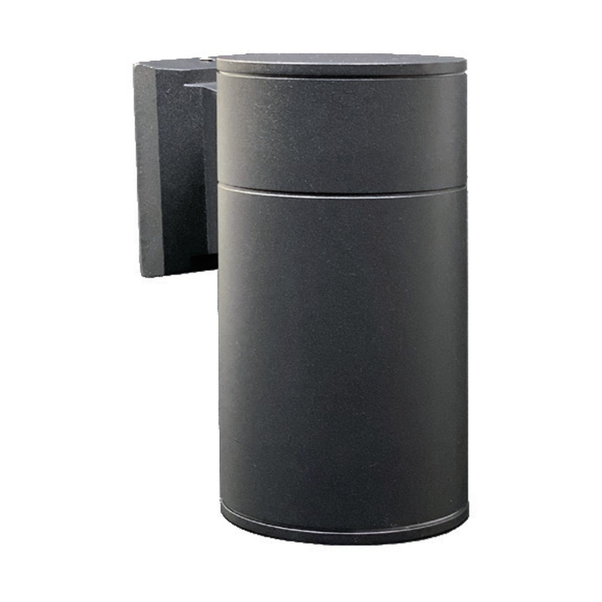
ECO-LL180-SLED 벽부등식별번호 25241455크기 180×230×87.5소비전력 2W카탈로그 20-21P / PDF 11공통 이미지ok
ECO-LLW109LED 벽부등식별번호 26084705크기 109×167×203mm소비전력 15W카탈로그 20-21P / PDF 11공통 이미지ok
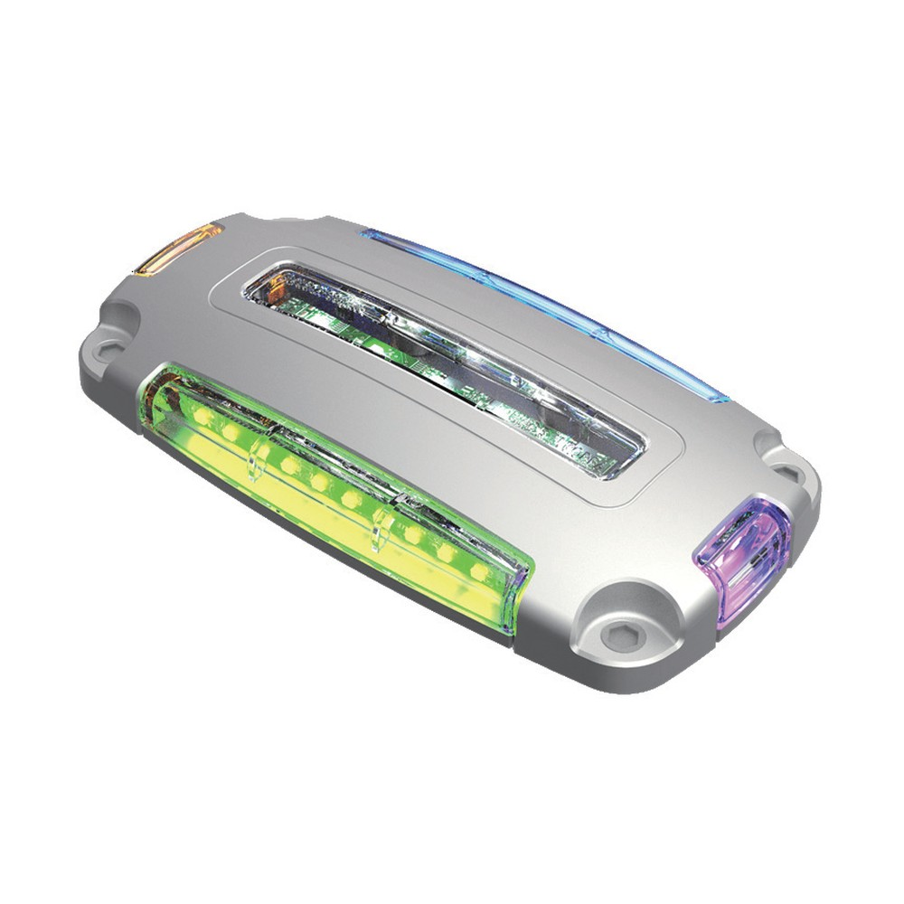
ECO-LL19-AULED 경계석조명 · 레인보우식별번호 25987478크기 부착형 195×100×30소비전력 6W카탈로그 22-23P / PDF 12공통 이미지ok
ECO-LL23-AULED 경계석조명 · 레인보우식별번호 25987477크기 매립형 230×135×80mm소비전력 6W카탈로그 22-23P / PDF 12공통 이미지ok
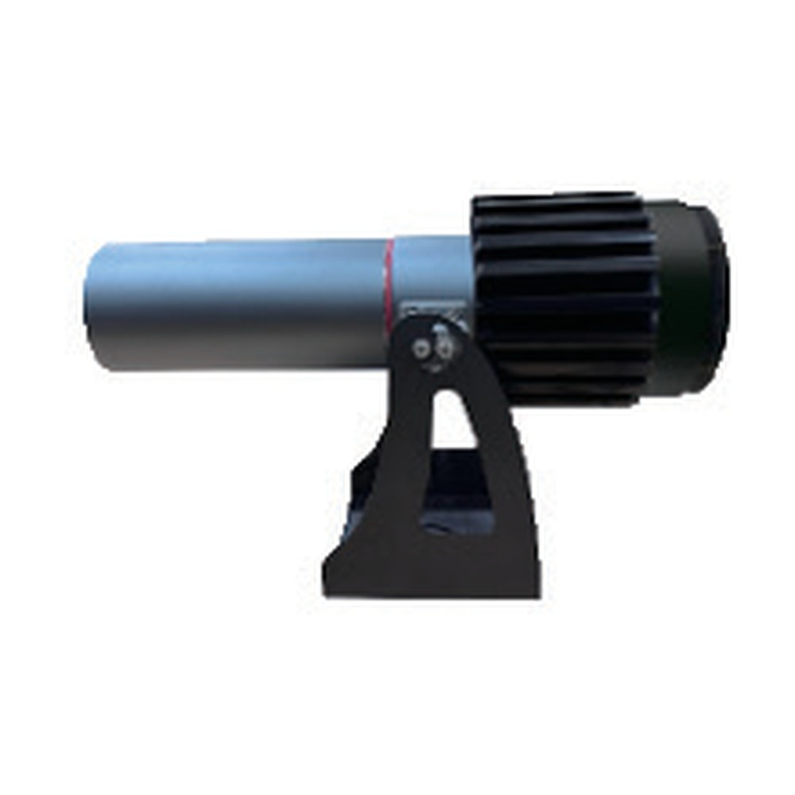
ECO-LL50W-CU로고젝터 (LED 경관조명기구)식별번호 25235290크기 327×111×170소비전력 50W카탈로그 24-25P / PDF 13모델 전용 이미지ok
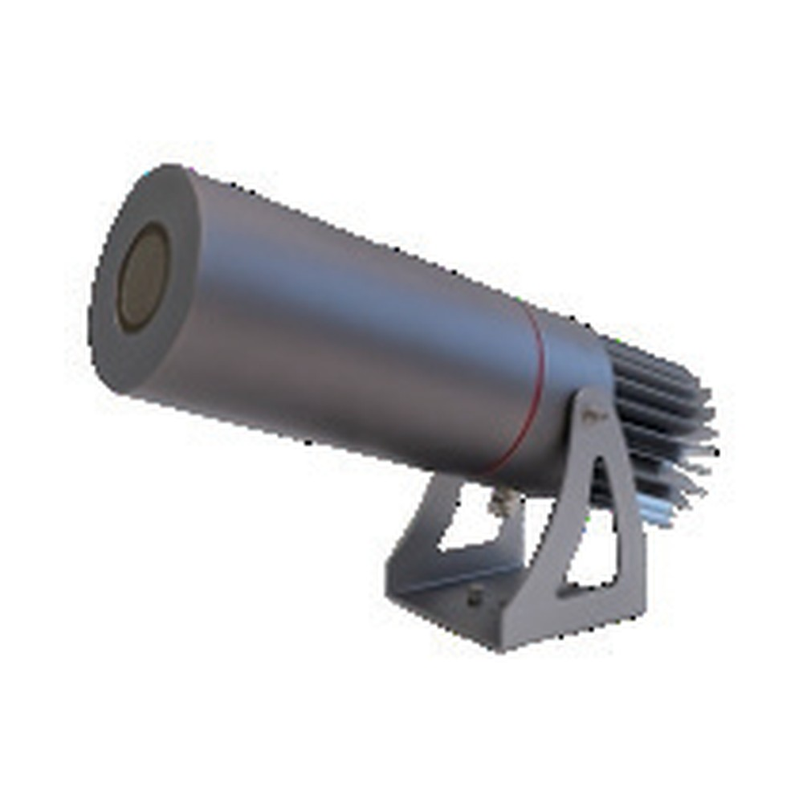
ECO-LL80W-CU로고젝터 (LED 경관조명기구)식별번호 25235291크기 367×111×215소비전력 80W카탈로그 24-25P / PDF 13모델 전용 이미지ok

ECO-LL100W-CU로고젝터 (LED 경관조명기구)식별번호 25235292크기 367×111×215소비전력 100W카탈로그 24-25P / PDF 13모델 전용 이미지ok
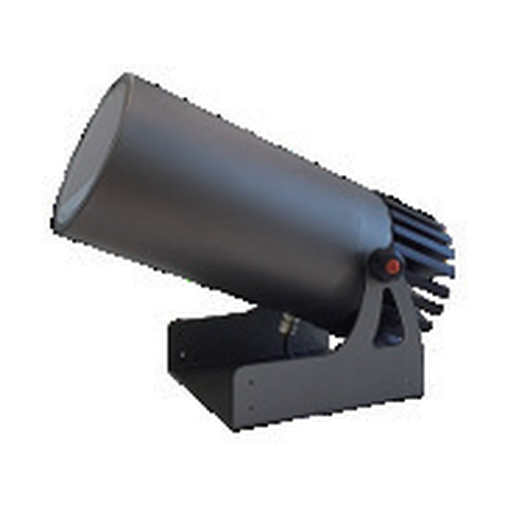
ECO-LL200W-CU로고젝터 (LED 경관조명기구)식별번호 25476606크기 403×167×270mm소비전력 200W카탈로그 24-25P / PDF 13모델 전용 이미지ok
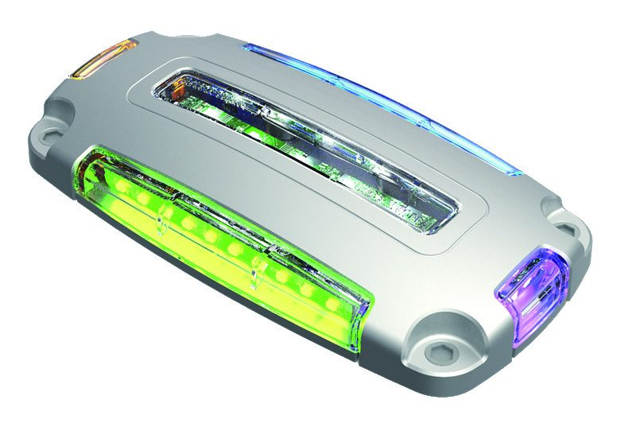
ECO-LL155-HULED 경계석조명 · 뉴경계석표지병식별번호 25241460크기 W155 × D150 × H55mm소비전력 9.6mW카탈로그 26-27P / PDF 14공통 이미지ok
ECO-LL155-BULED 경계석조명 · 뉴경계석표지병식별번호 25241459크기 W155 × D150 × H55mm소비전력 3.6mW카탈로그 26-27P / PDF 14공통 이미지ok
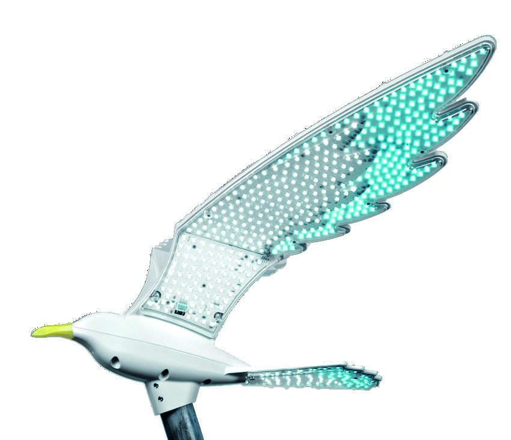
ECO-LL60W-ButterflyLED 공원등 (디자인 가로등)식별번호 25468414크기 483×456×H132소비전력 80W카탈로그 28-29P / PDF 15공통 이미지ok
ECO-LL60W-SeagullLED 공원등 (디자인 가로등)식별번호 25462493크기 947×520×H421mm소비전력 80W카탈로그 28-29P / PDF 15공통 이미지ok
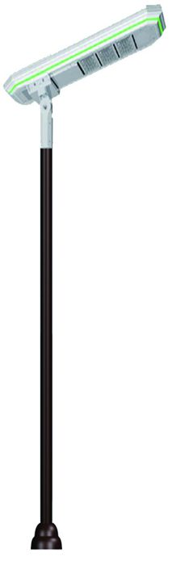
ECO-LL50SLED 공원보안등 (태양광형)식별번호 25800234크기 1123×373×3900소비전력 50W카탈로그 30-33P / PDF 16공통 이미지ok
ECO-LL30S-3MLED 공원보안등 (태양광형)식별번호 25795266크기 1123×373×3000소비전력 30W카탈로그 30-33P / PDF 16공통 이미지ok
ECO-LL25SLED 공원보안등 (태양광형)식별번호 25987479크기 599×300×3000mm소비전력 25W카탈로그 30-33P / PDF 16공통 이미지ok
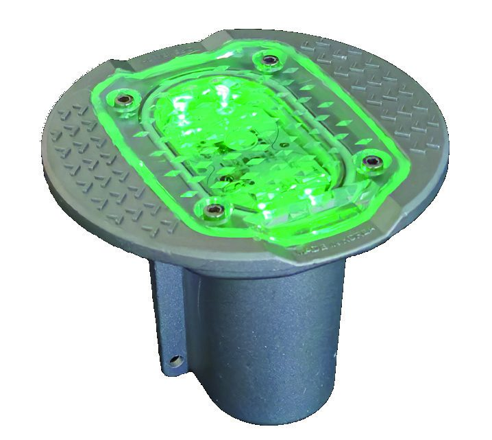
ECO-LL130-BULED 포인트 조명식별번호 25241458크기 130×130×H95소비전력 3.6mW카탈로그 32-33P / PDF 17공통 이미지ok
ECO-LL138-SULED 포인트 조명식별번호 25241461크기 150×138×H25.5소비전력 9.6W카탈로그 32-33P / PDF 17공통 이미지ok
ECO-LL275-C10LED 포인트 조명식별번호 26316682크기 275×80×59mm소비전력 10W카탈로그 32-33P / PDF 17공통 이미지ok
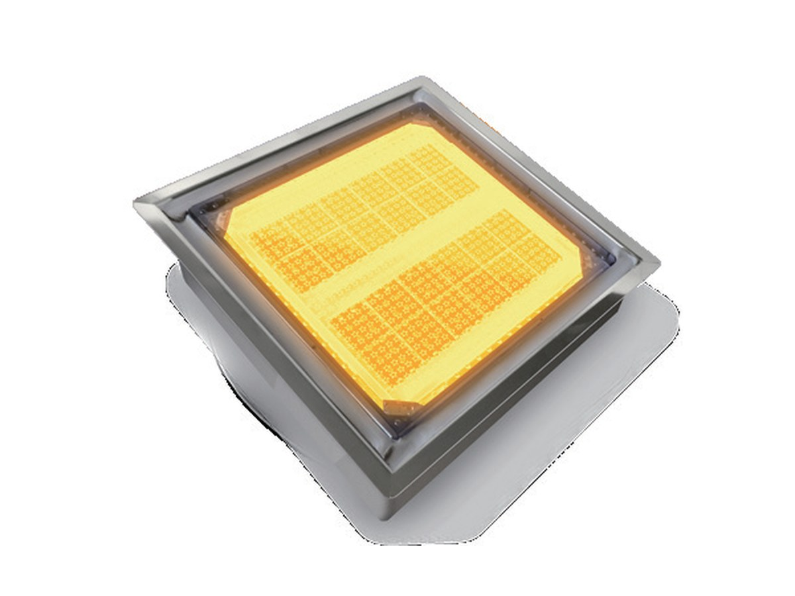
ECO-LL222-60SLED 바닥매립등 · 사각형 (태양광)식별번호 25462494크기 222×222×H60소비전력 27mW카탈로그 34-35P / PDF 18공통 이미지ok
ECO-LL118-60SLED 바닥매립등 · 사각형 (태양광)식별번호 25462495크기 118×118×H60mm소비전력 4mW카탈로그 34-35P / PDF 18공통 이미지ok
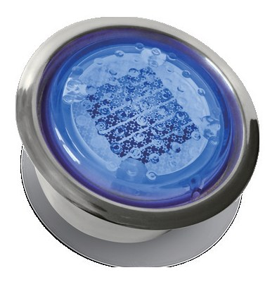
ECO-LL120-60SLED 바닥매립등 · 원형 (태양광)식별번호 25468417크기 ① Ø120×H60 ② Ø96×H47.8 ③ Ø67×H30.8mm소비전력 ① 4mW ② 3mW ③ 3mW카탈로그 36-37P / PDF 19공통 이미지needs_check (ECO-LL110-90S 사양·이미지 불명확 — 36P)
ECO-LL96-47SLED 바닥매립등 · 원형 (태양광)식별번호 25468416크기 ① Ø120×H60 ② Ø96×H47.8 ③ Ø67×H30.8mm소비전력 ① 4mW ② 3mW ③ 3mW카탈로그 36-37P / PDF 19공통 이미지needs_check (ECO-LL110-90S 사양·이미지 불명확 — 36P)
ECO-LL67-30SLED 바닥매립등 · 원형 (태양광)식별번호 25468415크기 ① Ø120×H60 ② Ø96×H47.8 ③ Ø67×H30.8mm소비전력 ① 4mW ② 3mW ③ 3mW카탈로그 36-37P / PDF 19공통 이미지needs_check (ECO-LL110-90S 사양·이미지 불명확 — 36P)
ECO-LL110-90SLED 바닥매립등 · 원형 (태양광)식별번호 -크기 ① Ø120×H60 ② Ø96×H47.8 ③ Ø67×H30.8mm소비전력 ① 4mW ② 3mW ③ 3mW카탈로그 36-37P / PDF 19공통 이미지needs_check
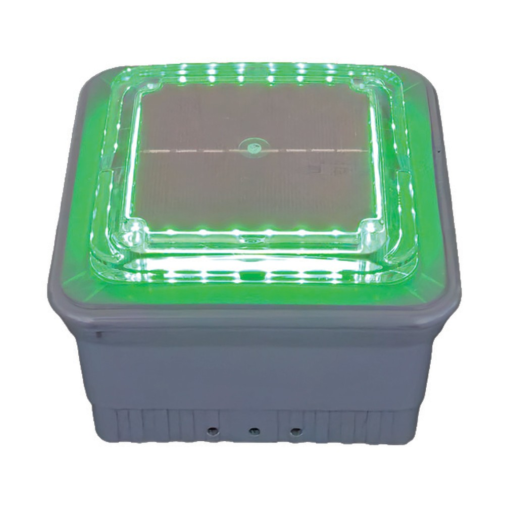
ECO-LL157-SU사각 펜스기둥조명식별번호 25251812크기 157×157×H101mm소비전력 9.6mW카탈로그 38-39P / PDF 20공통 이미지needs_check (배터리형 타입 표기 불일치 — 38P)
ECO-LL157-HU사각 펜스기둥조명식별번호 25251811크기 157×157×H101mm소비전력 9.6mW카탈로그 38-39P / PDF 20공통 이미지needs_check (배터리형 타입 표기 불일치 — 38P)
ECO-LL157-BU사각 펜스기둥조명식별번호 25251810크기 157×157×H101mm소비전력 3.6mW카탈로그 38-39P / PDF 20공통 이미지needs_check
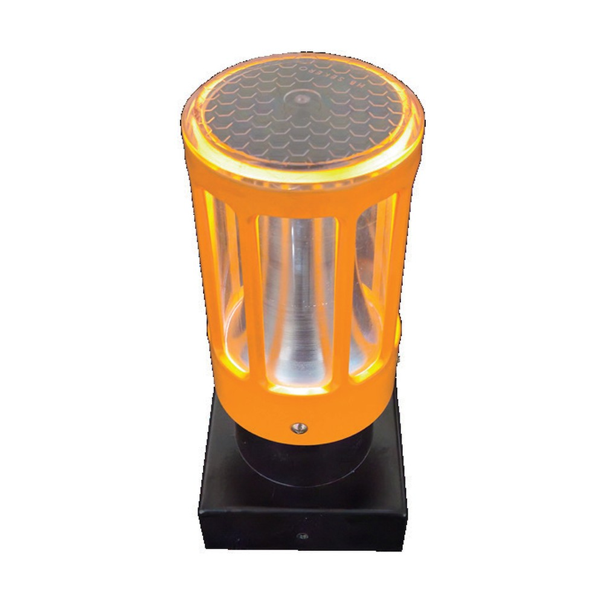
ECO-LL110-SU원형 펜스기둥조명식별번호 25251813크기 Ø110 × H234.5mm소비전력 9.6mW카탈로그 40-41P / PDF 21모델 전용 이미지needs_check (모델명 표기 불일치 — 40P)
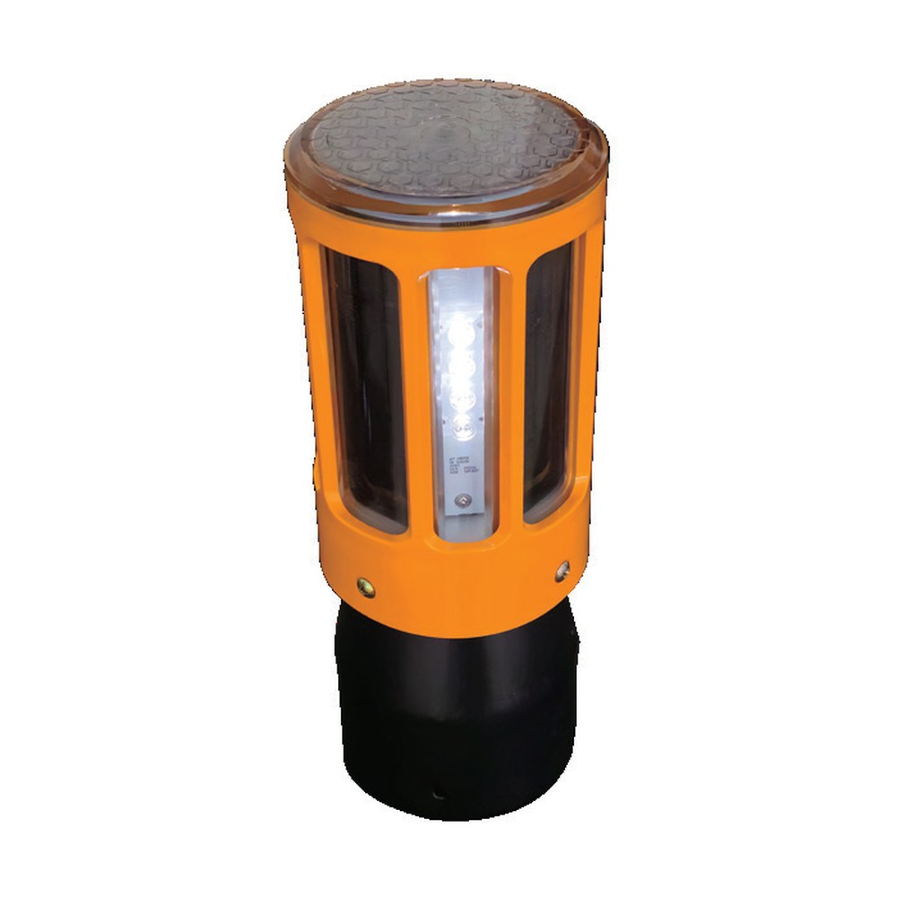
ECO-LL110-HU원형 펜스기둥조명식별번호 25251814크기 Ø110 × H234.5mm소비전력 9.6mW카탈로그 40-41P / PDF 21모델 전용 이미지needs_check (모델명 표기 불일치 — 40P)
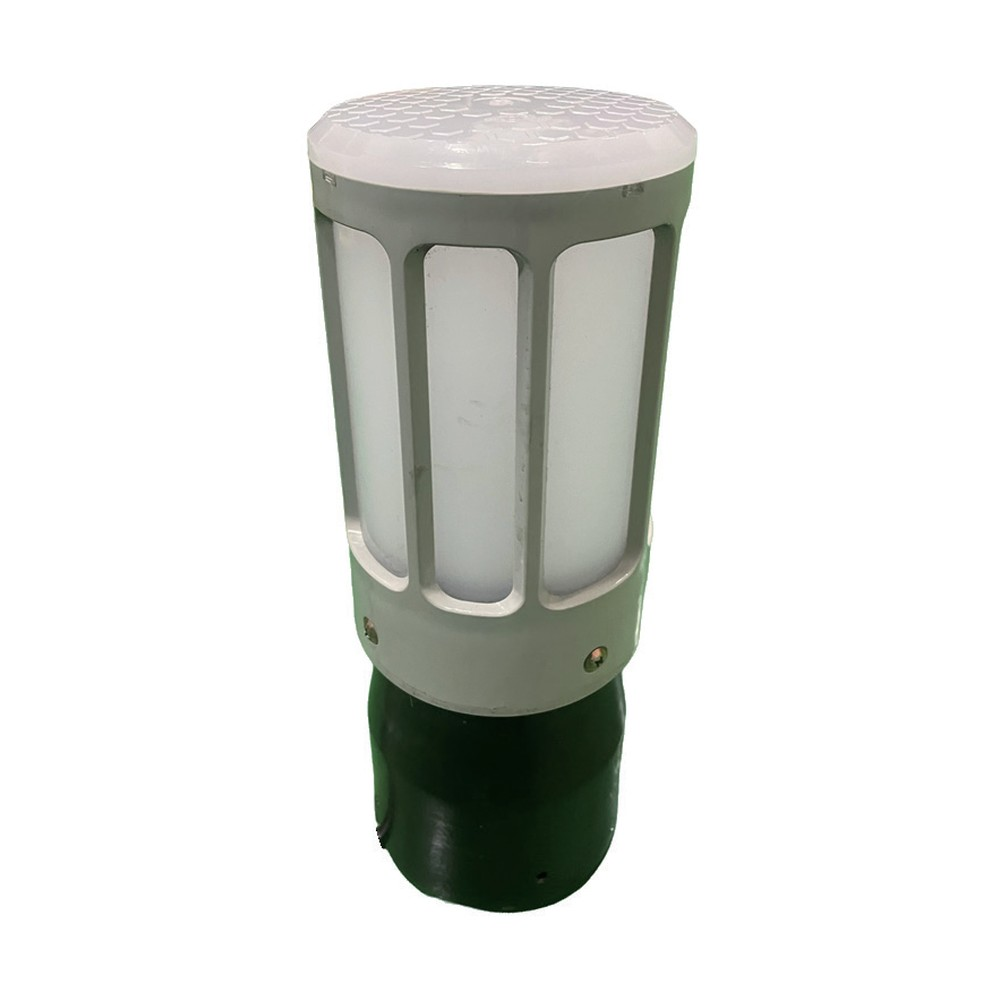
ECO-LL110-CU원형 펜스기둥조명식별번호 -크기 Ø110 × H234.5mm소비전력 3W카탈로그 40-41P / PDF 21모델 전용 이미지needs_check
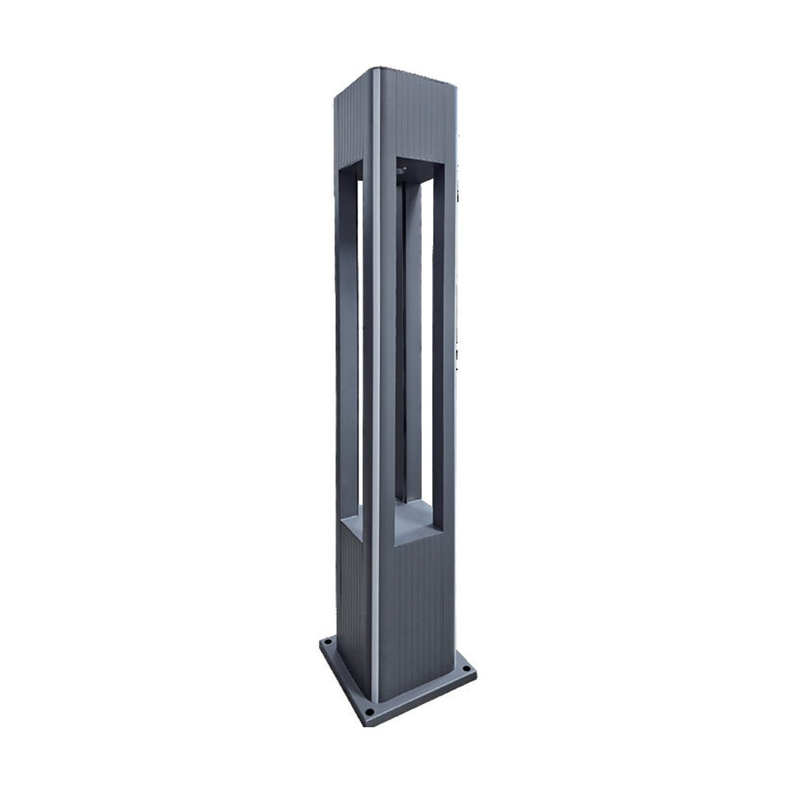
ECO-LLBRD800LED 볼라드 조명식별번호 26084707크기 150×150×800소비전력 9W카탈로그 42-43P / PDF 22모델 전용 이미지ok
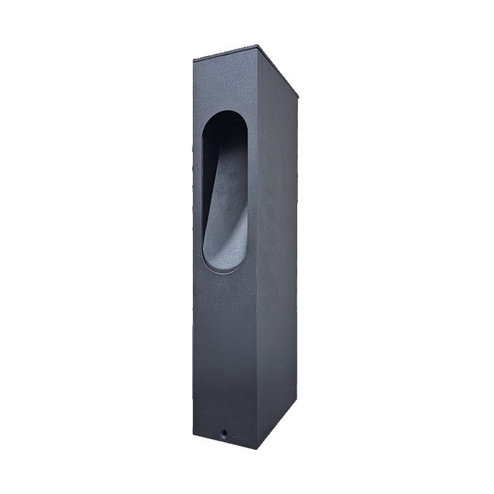
ECO-LLBRD300LED 볼라드 조명식별번호 26084706크기 72×115×300소비전력 5.5W카탈로그 42-43P / PDF 22모델 전용 이미지ok
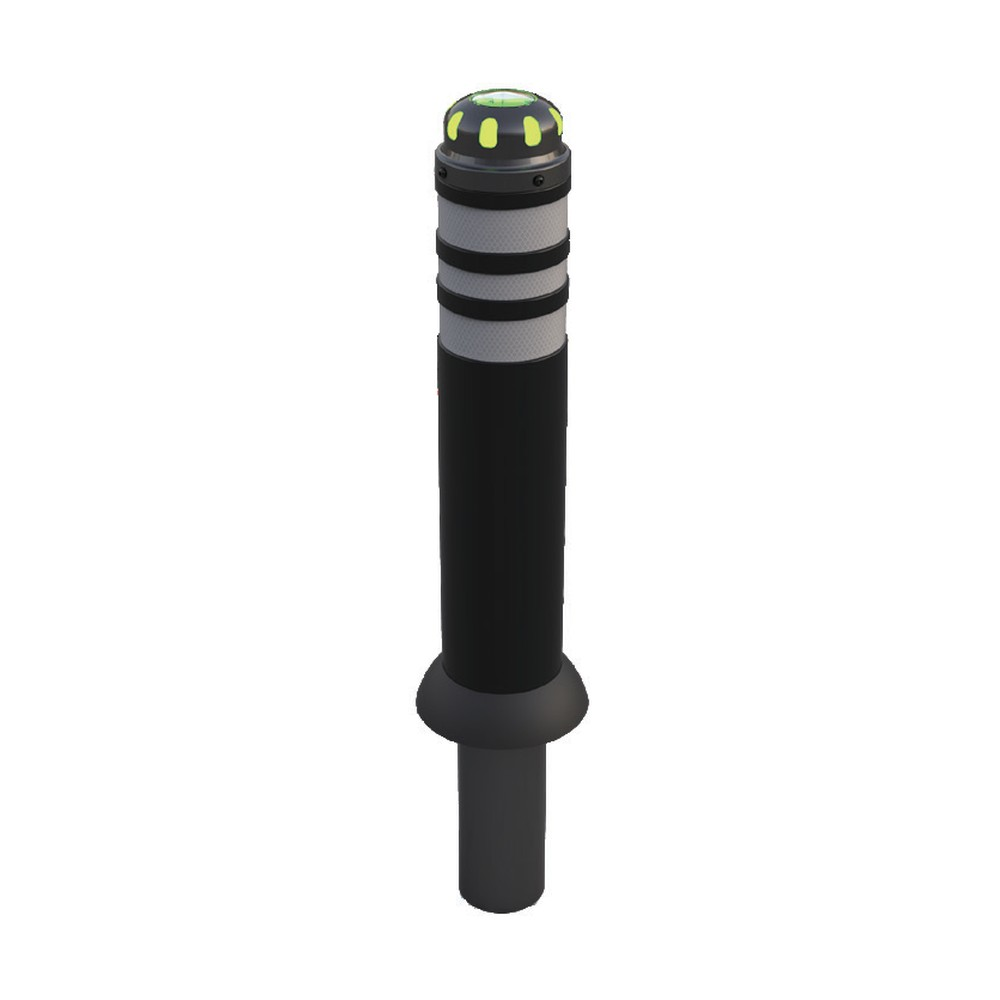
ECO-LLBRD110LED 볼라드 조명식별번호 26122096크기 Ø110×1268소비전력 3W카탈로그 42-43P / PDF 22공통 이미지ok
ECO-LLBRD150LED 볼라드 조명식별번호 26122095크기 Ø150×1065mm소비전력 3W카탈로그 42-43P / PDF 22공통 이미지ok
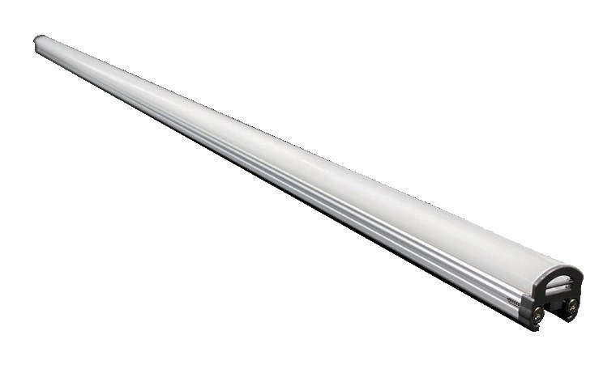
ECO26-LLBA1000-L15LED 라인조명 (라인바·핸드레일바·바)식별번호 26316683크기 1000×25×21소비전력 15W카탈로그 44-45P / PDF 23공통 이미지ok
ECO26-LLBA1000-H15LED 라인조명 (라인바·핸드레일바·바)식별번호 23619182크기 1000×55(Ø72)×17소비전력 15W카탈로그 44-45P / PDF 23공통 이미지ok
ECO26-LLBA1000-L15BLED 라인조명 (라인바·핸드레일바·바)식별번호 26316692크기 1000×26×25mm소비전력 15W카탈로그 44-45P / PDF 23공통 이미지ok
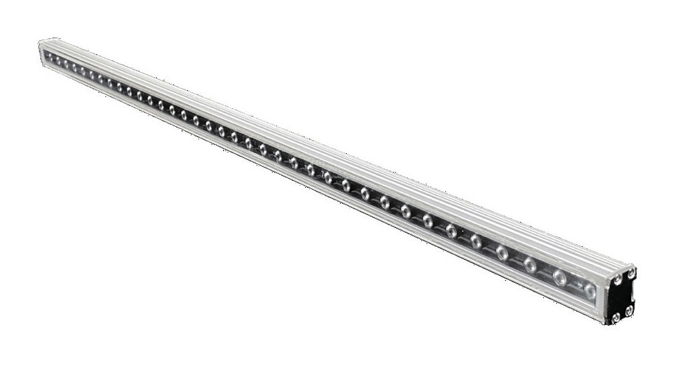
ECO26-LLBA1000-F18LED 바 투광등 (라인투광조명)식별번호 26316684크기 1000×36×30mm소비전력 18W카탈로그 46-47P / PDF 24공통 이미지ok
ECO26-LLBA1000-F24LED 바 투광등 (라인투광조명)식별번호 26316685크기 1000×36×30mm소비전력 24W카탈로그 46-47P / PDF 24공통 이미지ok
ECO26-LLBA1000-F36LED 바 투광등 (라인투광조명)식별번호 26316693크기 1000×36×30mm소비전력 36W카탈로그 46-47P / PDF 24공통 이미지ok
ECO26-LLBA1000-F54LED 바 투광등 (라인투광조명)식별번호 26316694크기 1000×36×30mm소비전력 54W카탈로그 46-47P / PDF 24공통 이미지ok
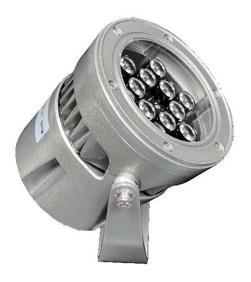
ECO26-LLC125-F12LED 원형 투광등 (Ø125)식별번호 26316686크기 Ø125 × 130mm소비전력 12W카탈로그 48-49P / PDF 25공통 이미지ok
ECO26-LLC125-F18LED 원형 투광등 (Ø125)식별번호 26316687크기 Ø125 × 130mm소비전력 18W카탈로그 48-49P / PDF 25공통 이미지ok
ECO26-LLC125-F24LED 원형 투광등 (Ø125)식별번호 26316688크기 Ø125 × 130mm소비전력 24W카탈로그 48-49P / PDF 25공통 이미지ok
ECO26-LLC160-F36LED 원형 투광등 (Ø165/Ø217)식별번호 26316695크기 Ø165×163소비전력 36W카탈로그 50-51P / PDF 26공통 이미지needs_check (72W·108W 모델명 표기 불일치 — 50P)
ECO26-LLC160-F42LED 원형 투광등 (Ø165/Ø217)식별번호 26316696크기 Ø165×163소비전력 42W카탈로그 50-51P / PDF 26공통 이미지needs_check (72W·108W 모델명 표기 불일치 — 50P)
ECO26-LLC217-F54LED 원형 투광등 (Ø165/Ø217)식별번호 26316697크기 Ø217×203mm소비전력 54W카탈로그 50-51P / PDF 26공통 이미지needs_check (72W·108W 모델명 표기 불일치 — 50P)
ECO26-LL217-F72LED 원형 투광등 (Ø165/Ø217)식별번호 26316701크기 Ø217×203mm소비전력 72W카탈로그 50-51P / PDF 26공통 이미지needs_check
ECO26-LL217-F108LED 원형 투광등 (Ø165/Ø217)식별번호 26316704크기 Ø217×203mm소비전력 108W카탈로그 50-51P / PDF 26공통 이미지needs_check
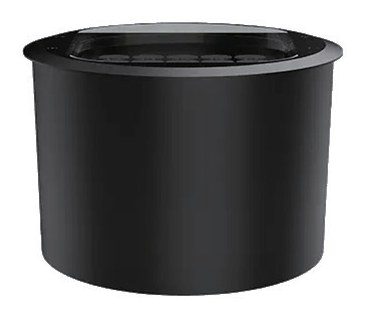
ECO-LL100-C12LED 원형 지중등식별번호 26316689크기 Ø100×95소비전력 12W카탈로그 52-53P / PDF 27공통 이미지ok
ECO-LL140-C18LED 원형 지중등식별번호 26316690크기 Ø140×115소비전력 18W카탈로그 52-53P / PDF 27공통 이미지ok
ECO-LL180-C36LED 원형 지중등식별번호 26316698크기 Ø180×140소비전력 36W카탈로그 52-53P / PDF 27공통 이미지ok
ECO-LL220-C54LED 원형 지중등식별번호 26316699크기 Ø220×150mm소비전력 54W카탈로그 52-53P / PDF 27공통 이미지ok
ECO-LL220-C72LED 원형 지중등식별번호 26316702크기 Ø220×150mm소비전력 72W카탈로그 52-53P / PDF 27공통 이미지ok
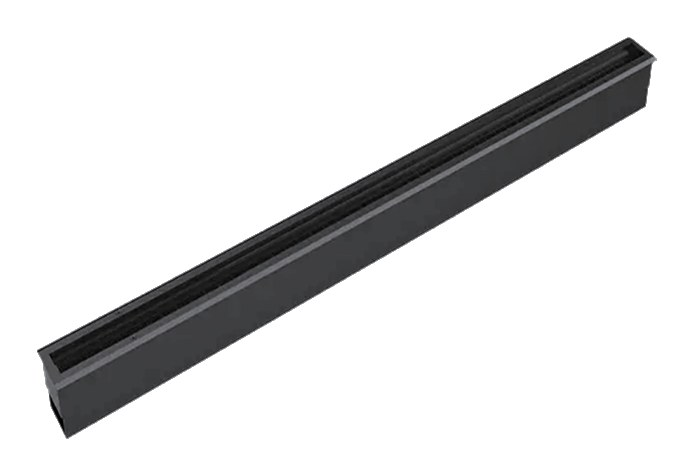
ECO-LL1010-C15LED 바 지중등 (라인지중등)식별번호 26316691크기 1010×65×70소비전력 15W카탈로그 54-55P / PDF 28공통 이미지ok
ECO-LL1010-C36LED 바 지중등 (라인지중등)식별번호 26316700크기 1010×90×100소비전력 36W카탈로그 54-55P / PDF 28공통 이미지ok
ECO-LL1010-C72LED 바 지중등 (라인지중등)식별번호 26316703크기 1010×95×105mm소비전력 72W카탈로그 54-55P / PDF 28공통 이미지ok
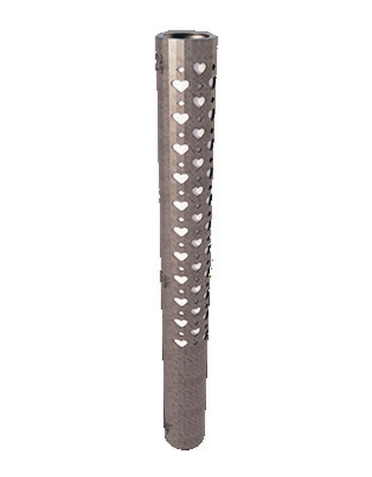
ECO-LL2000-120LED 열주등식별번호 26328196크기 Ø216 × 2000mm소비전력 120W카탈로그 55P / PDF 28모델 전용 이미지ok
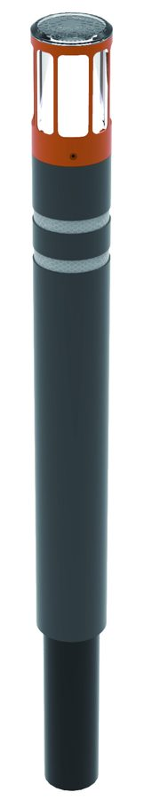
ECO-BRD150-HDØ150 LED 볼라드 · 하이브리드형식별번호 25676355크기 앵커식 Ø150×H790 · 매립식/이동식 Ø150×H800mm소비전력 -카탈로그 56-57P / PDF 29공통 이미지needs_check (매립·앵커 식별번호 중복 — 56P)
ECO-BRD150-HAØ150 LED 볼라드 · 하이브리드형식별번호 25676355크기 앵커식 Ø150×H790 · 매립식/이동식 Ø150×H800mm소비전력 -카탈로그 56-57P / PDF 29공통 이미지needs_check
ECO-BRD150-HMØ150 LED 볼라드 · 하이브리드형식별번호 25676358크기 앵커식 Ø150×H790 · 매립식/이동식 Ø150×H800mm소비전력 -카탈로그 56-57P / PDF 29공통 이미지needs_check (매립·앵커 식별번호 중복 — 56P)
ECO-BRD150-BDØ150 LED 볼라드 · 배터리형식별번호 25676351크기 앵커식 Ø150×H790 · 매립식/이동식 Ø150×H800mm소비전력 -카탈로그 56-57P / PDF 29공통 이미지needs_check (매립·앵커 식별번호 중복 — 56P)
ECO-BRD150-BAØ150 LED 볼라드 · 배터리형식별번호 25676351크기 앵커식 Ø150×H790 · 매립식/이동식 Ø150×H800mm소비전력 -카탈로그 56-57P / PDF 29공통 이미지needs_check
ECO-BRD150-BMØ150 LED 볼라드 · 배터리형식별번호 25676353크기 앵커식 Ø150×H790 · 매립식/이동식 Ø150×H800mm소비전력 -카탈로그 56-57P / PDF 29공통 이미지needs_check (매립·앵커 식별번호 중복 — 56P)
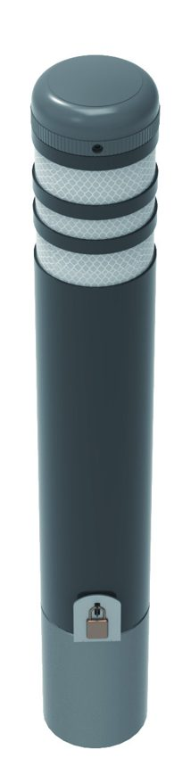
ECO-BRD110-SDØ110 LED 볼라드 · 태양광형식별번호 25676347크기 앵커식 Ø110×H980 · 매립식/이동식 Ø110×H960mm소비전력 -카탈로그 56-57P / PDF 29공통 이미지ok
ECO-BRD110-SAØ110 LED 볼라드 · 태양광형식별번호 25675323크기 앵커식 Ø110×H980 · 매립식/이동식 Ø110×H960mm소비전력 -카탈로그 56-57P / PDF 29공통 이미지ok
ECO-BRD110-SMØ110 LED 볼라드 · 태양광형식별번호 25676348크기 앵커식 Ø110×H980 · 매립식/이동식 Ø110×H960mm소비전력 -카탈로그 56-57P / PDF 29공통 이미지ok
ECO-BRD110-HDØ110 LED 볼라드 · 하이브리드형식별번호 25676349크기 앵커식 Ø110×H980 · 매립식/이동식 Ø110×H960mm소비전력 -카탈로그 56-57P / PDF 29공통 이미지ok
ECO-BRD110-HAØ110 LED 볼라드 · 하이브리드형식별번호 25675324크기 앵커식 Ø110×H980 · 매립식/이동식 Ø110×H960mm소비전력 -카탈로그 56-57P / PDF 29공통 이미지ok
ECO-BRD110-HMØ110 LED 볼라드 · 하이브리드형식별번호 25676350크기 앵커식 Ø110×H980 · 매립식/이동식 Ø110×H960mm소비전력 -카탈로그 56-57P / PDF 29공통 이미지ok
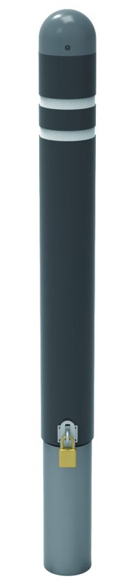
ECO-BRD110-XDØ110 비조명형 볼라드식별번호 25658332크기 매립식/이동식 Ø110×H860 · 앵커식 Ø110×H870mm소비전력 -카탈로그 58-59P / PDF 30공통 이미지ok
ECO-BRD110-XAØ110 비조명형 볼라드식별번호 25658331크기 매립식/이동식 Ø110×H860 · 앵커식 Ø110×H870mm소비전력 -카탈로그 58-59P / PDF 30공통 이미지ok
ECO-BRD110-XMØ110 비조명형 볼라드식별번호 25658330크기 매립식/이동식 Ø110×H860 · 앵커식 Ø110×H870mm소비전력 -카탈로그 58-59P / PDF 30공통 이미지ok
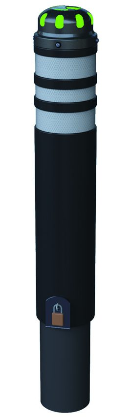
ECO-BRD150-XDØ150 비조명형 볼라드식별번호 25658329크기 매립식/이동식 Ø150×H760 · 앵커식 Ø150×H770mm소비전력 -카탈로그 58-59P / PDF 30공통 이미지ok
ECO-BRD150-XAØ150 비조명형 볼라드식별번호 25658328크기 매립식/이동식 Ø150×H760 · 앵커식 Ø150×H770mm소비전력 -카탈로그 58-59P / PDF 30공통 이미지ok
ECO-BRD150-XMØ150 비조명형 볼라드식별번호 25658327크기 매립식/이동식 Ø150×H760 · 앵커식 Ø150×H770mm소비전력 -카탈로그 58-59P / PDF 30공통 이미지ok
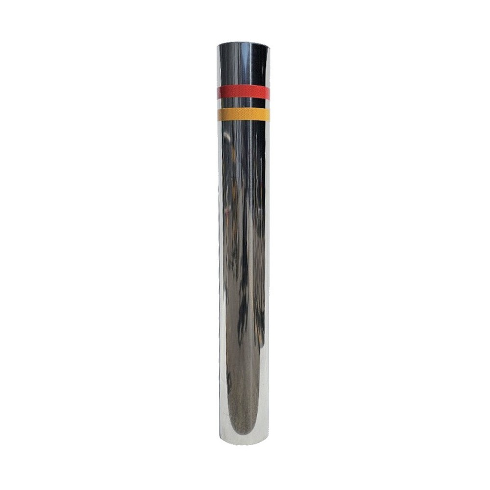
ECO-BRD101S-ID스테인리스 볼라드 · I형식별번호 —크기 매립식/이동식 Ø101.6×1050×2T · 앵커식 Ø101.6×900×2T소비전력 -카탈로그 62-63P / PDF 32공통 이미지needs_check (제품명과 실제 형태 불일치 — 63P)
ECO-BRD101S-IA스테인리스 볼라드 · I형식별번호 —크기 매립식/이동식 Ø101.6×1050×2T · 앵커식 Ø101.6×900×2T소비전력 -카탈로그 62-63P / PDF 32공통 이미지needs_check (제품명과 실제 형태 불일치 — 63P)
ECO-BRD101S-IM스테인리스 볼라드 · I형식별번호 —크기 매립식/이동식 Ø101.6×1050×2T · 앵커식 Ø101.6×900×2T소비전력 -카탈로그 62-63P / PDF 32공통 이미지needs_check (제품명과 실제 형태 불일치 — 63P)
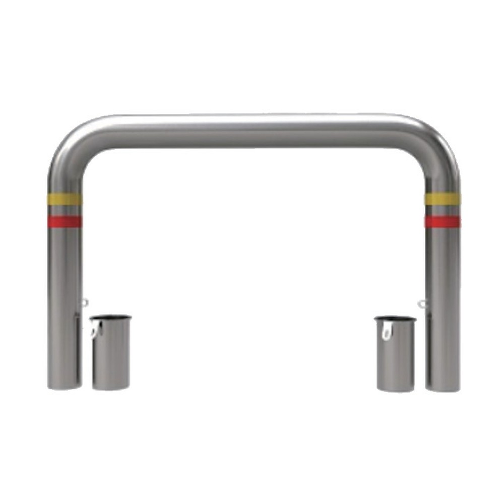
ECO-BRD1200S-UD스테인리스 볼라드 · U형식별번호 —크기 매립식/이동식 Ø101.6×1200×1150 · 앵커식 Ø101.6×1200×900mm소비전력 -카탈로그 62-63P / PDF 32공통 이미지ok
ECO-BRD1200S-UA스테인리스 볼라드 · U형식별번호 —크기 매립식/이동식 Ø101.6×1200×1150 · 앵커식 Ø101.6×1200×900mm소비전력 -카탈로그 62-63P / PDF 32공통 이미지ok
ECO-BRD1200S-UM스테인리스 볼라드 · U형식별번호 —크기 매립식/이동식 Ø101.6×1200×1150 · 앵커식 Ø101.6×1200×900mm소비전력 -카탈로그 62-63P / PDF 32공통 이미지ok
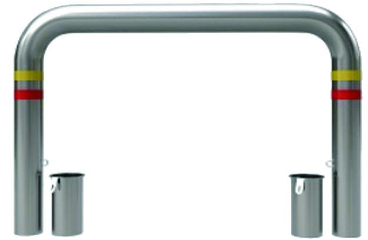
ECO-JHGD1차량방호책 · SB1등급식별번호 26002008크기 W2,000 × H1,100mm (ECO-JHGD1)소비전력 -카탈로그 64-65P / PDF 33공통 이미지ok
ECO-JHGD1-01차량방호책 · SB1등급식별번호 26002007크기 W2,000 × H1,100mm (ECO-JHGD1)소비전력 -카탈로그 64-65P / PDF 33공통 이미지ok
ECO-JHGD1-02차량방호책 · SB1등급식별번호 26002006크기 W2,000 × H1,100mm (ECO-JHGD1)소비전력 -카탈로그 64-65P / PDF 33공통 이미지ok
ECO-JHGD1-03차량방호책 · SB1등급식별번호 26002005크기 W2,000 × H1,100mm (ECO-JHGD1)소비전력 -카탈로그 64-65P / PDF 33공통 이미지ok
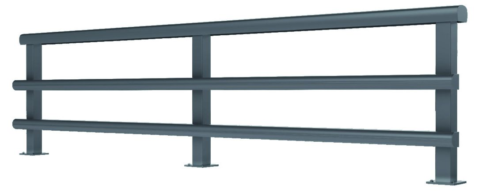
ECO-R190J77보행자용 방호울타리 · 도심구간식별번호 25987812크기 W2,000 × H990~1,100mm (모델별 상이)소비전력 -카탈로그 64-67P / PDF 33공통 이미지needs_check (66P·71P 이미지 캡션과 사양표 모델명 불일치)
ECO-R196J52보행자용 방호울타리 · 도심구간식별번호 25987811크기 W2,000 × H990~1,100mm (모델별 상이)소비전력 -카탈로그 64-67P / PDF 33공통 이미지needs_check (66P·71P 이미지 캡션과 사양표 모델명 불일치)
ECO-R195J50보행자용 방호울타리 · 도심구간식별번호 25987810크기 W2,000 × H990~1,100mm (모델별 상이)소비전력 -카탈로그 64-67P / PDF 33공통 이미지needs_check (66P·71P 이미지 캡션과 사양표 모델명 불일치)
ECO-R193J46보행자용 방호울타리 · 도심구간식별번호 25987809크기 W2,000 × H990~1,100mm (모델별 상이)소비전력 -카탈로그 64-67P / PDF 33공통 이미지needs_check (66P·71P 이미지 캡션과 사양표 모델명 불일치)
ECO-R193J45보행자용 방호울타리 · 도심구간식별번호 25987808크기 W2,000 × H990~1,100mm (모델별 상이)소비전력 -카탈로그 64-67P / PDF 33공통 이미지needs_check (66P·71P 이미지 캡션과 사양표 모델명 불일치)
ECO-R157J23보행자용 방호울타리 · 도심구간식별번호 25994797크기 W2,000 × H990~1,100mm (모델별 상이)소비전력 -카탈로그 64-67P / PDF 33공통 이미지needs_check (66P·71P 이미지 캡션과 사양표 모델명 불일치)
ECO-R155J17보행자용 방호울타리 · 도심구간식별번호 25987807크기 W2,000 × H990~1,100mm (모델별 상이)소비전력 -카탈로그 64-67P / PDF 33공통 이미지needs_check (66P·71P 이미지 캡션과 사양표 모델명 불일치)
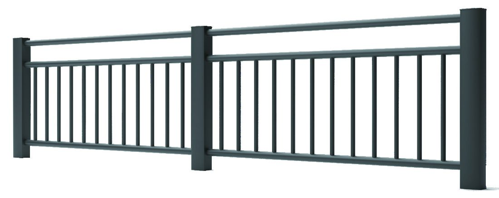
ECO-R156-01보차도경계용 울타리식별번호 25987806크기 W1,900~4,000 × H500~1,200mm (모델별 상이)소비전력 -카탈로그 66-71P / PDF 34공통 이미지ok
ECO-R157보차도경계용 울타리식별번호 25994798크기 W1,900~4,000 × H500~1,200mm (모델별 상이)소비전력 -카탈로그 66-71P / PDF 34공통 이미지ok
ECO-R157-02보차도경계용 울타리식별번호 25994799크기 W1,900~4,000 × H500~1,200mm (모델별 상이)소비전력 -카탈로그 66-71P / PDF 34공통 이미지ok
ECO-R161보차도경계용 울타리식별번호 25994800크기 W1,900~4,000 × H500~1,200mm (모델별 상이)소비전력 -카탈로그 66-71P / PDF 34공통 이미지ok
ECO-R164보차도경계용 울타리식별번호 25987805크기 W1,900~4,000 × H500~1,200mm (모델별 상이)소비전력 -카탈로그 66-71P / PDF 34공통 이미지ok
ECO-R164-01보차도경계용 울타리식별번호 25987804크기 W1,900~4,000 × H500~1,200mm (모델별 상이)소비전력 -카탈로그 66-71P / PDF 34공통 이미지ok
ECO-R165보차도경계용 울타리식별번호 25987803크기 W1,900~4,000 × H500~1,200mm (모델별 상이)소비전력 -카탈로그 66-71P / PDF 34공통 이미지ok
ECO-R165-02보차도경계용 울타리식별번호 25987802크기 W1,900~4,000 × H500~1,200mm (모델별 상이)소비전력 -카탈로그 66-71P / PDF 34공통 이미지ok
ECO-R165-03보차도경계용 울타리식별번호 26002011크기 W1,900~4,000 × H500~1,200mm (모델별 상이)소비전력 -카탈로그 66-71P / PDF 34공통 이미지ok
ECO-R189-01보차도경계용 울타리식별번호 25987801크기 W1,900~4,000 × H500~1,200mm (모델별 상이)소비전력 -카탈로그 66-71P / PDF 34공통 이미지ok
ECO-R190-01보차도경계용 울타리식별번호 25987800크기 W1,900~4,000 × H500~1,200mm (모델별 상이)소비전력 -카탈로그 66-71P / PDF 34공통 이미지ok
ECO-R235-A보차도경계용 울타리식별번호 25987799크기 W1,900~4,000 × H500~1,200mm (모델별 상이)소비전력 -카탈로그 66-71P / PDF 34공통 이미지ok
ECO-R117-AH보차도경계용 울타리식별번호 25987798크기 W1,900~4,000 × H500~1,200mm (모델별 상이)소비전력 -카탈로그 66-71P / PDF 34공통 이미지ok
ECO-R118-AH보차도경계용 울타리식별번호 25987797크기 W1,900~4,000 × H500~1,200mm (모델별 상이)소비전력 -카탈로그 66-71P / PDF 34공통 이미지ok
ECO-R130H보차도경계용 울타리식별번호 25987796크기 W1,900~4,000 × H500~1,200mm (모델별 상이)소비전력 -카탈로그 66-71P / PDF 34공통 이미지ok
ECO-RB04보차도경계용 울타리식별번호 —크기 W1,900~4,000 × H500~1,200mm (모델별 상이)소비전력 -카탈로그 66-71P / PDF 34공통 이미지ok
ECO-R01보차도경계용 울타리식별번호 —크기 W1,900~4,000 × H500~1,200mm (모델별 상이)소비전력 -카탈로그 66-71P / PDF 34공통 이미지ok
ECO-R02-01보차도경계용 울타리식별번호 —크기 W1,900~4,000 × H500~1,200mm (모델별 상이)소비전력 -카탈로그 66-71P / PDF 34공통 이미지ok
ECO-R216보차도경계용 울타리식별번호 —크기 W1,900~4,000 × H500~1,200mm (모델별 상이)소비전력 -카탈로그 66-71P / PDF 34공통 이미지ok
ECO-R218보차도경계용 울타리식별번호 —크기 W1,900~4,000 × H500~1,200mm (모델별 상이)소비전력 -카탈로그 66-71P / PDF 34공통 이미지ok
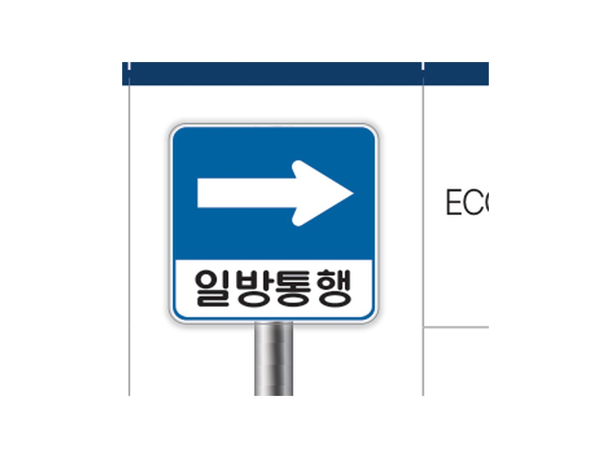
ECO-TS600-CWS일방통행표지식별번호 25235503크기 600×600×48 · 700×900×48mm소비전력 -카탈로그 76-77P / PDF 39공통 이미지ok
ECO-TS700-CWS일방통행표지식별번호 25235504크기 600×600×48 · 700×900×48mm소비전력 -카탈로그 76-77P / PDF 39공통 이미지ok
ECO-TS600-SWS일방통행표지식별번호 25235535크기 600×600×48 · 700×900×48mm소비전력 -카탈로그 76-77P / PDF 39공통 이미지ok
ECO-TS700-SWS일방통행표지식별번호 25235537크기 600×600×48 · 700×900×48mm소비전력 -카탈로그 76-77P / PDF 39공통 이미지ok
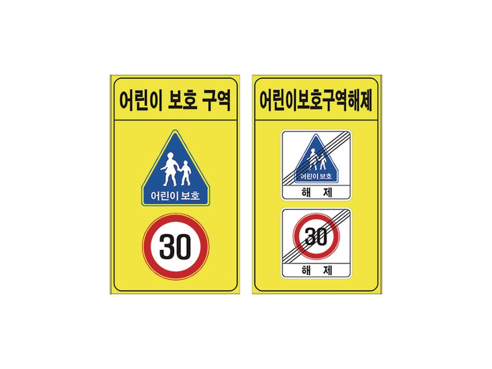
ECO-TS3000-CWL어린이보호구역표지식별번호 25235471크기 700×1050 · 1000×1500 · 1500×1000 · 3000×2000×48mm소비전력 -카탈로그 76-77P / PDF 39공통 이미지ok
ECO-TS3000-CWP어린이보호구역표지식별번호 25235463크기 700×1050 · 1000×1500 · 1500×1000 · 3000×2000×48mm소비전력 -카탈로그 76-77P / PDF 39공통 이미지ok
ECO-TS1500-CW어린이보호구역표지식별번호 25235466크기 700×1050 · 1000×1500 · 1500×1000 · 3000×2000×48mm소비전력 -카탈로그 76-77P / PDF 39공통 이미지ok
ECO-TS1000-CW어린이보호구역표지식별번호 25235464크기 700×1050 · 1000×1500 · 1500×1000 · 3000×2000×48mm소비전력 -카탈로그 76-77P / PDF 39공통 이미지ok
ECO-TS700-CW어린이보호구역표지식별번호 25235529크기 700×1050 · 1000×1500 · 1500×1000 · 3000×2000×48mm소비전력 -카탈로그 76-77P / PDF 39공통 이미지ok
ECO-TS3000-SWL어린이보호구역표지식별번호 25235510크기 700×1050 · 1000×1500 · 1500×1000 · 3000×2000×48mm소비전력 -카탈로그 76-77P / PDF 39공통 이미지ok
ECO-TS3000-SWP어린이보호구역표지식별번호 25235509크기 700×1050 · 1000×1500 · 1500×1000 · 3000×2000×48mm소비전력 -카탈로그 76-77P / PDF 39공통 이미지ok
ECO-TS1500-SW어린이보호구역표지식별번호 25235508크기 700×1050 · 1000×1500 · 1500×1000 · 3000×2000×48mm소비전력 -카탈로그 76-77P / PDF 39공통 이미지ok
ECO-TS1000-SW어린이보호구역표지식별번호 25235507크기 700×1050 · 1000×1500 · 1500×1000 · 3000×2000×48mm소비전력 -카탈로그 76-77P / PDF 39공통 이미지ok
ECO-TS700-SW어린이보호구역표지식별번호 25235506크기 700×1050 · 1000×1500 · 1500×1000 · 3000×2000×48mm소비전력 -카탈로그 76-77P / PDF 39공통 이미지ok
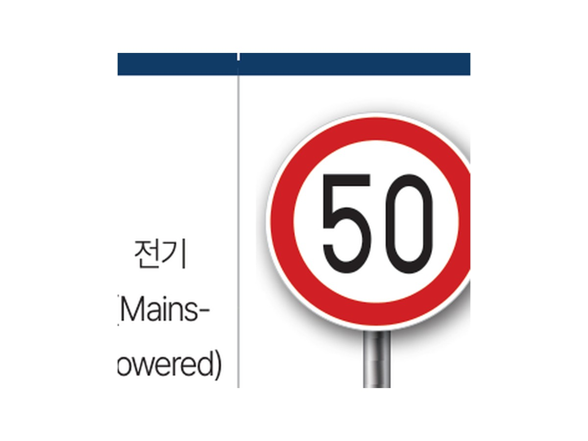
ECO-TS600-CWR최고속도제한표지식별번호 25235482크기 Ø600 · Ø900×48mm소비전력 -카탈로그 76-77P / PDF 39공통 이미지ok
ECO-TS900-CWR최고속도제한표지식별번호 25235490크기 Ø600 · Ø900×48mm소비전력 -카탈로그 76-77P / PDF 39공통 이미지ok
ECO-TS600-SWR최고속도제한표지식별번호 25235512크기 Ø600 · Ø900×48mm소비전력 -카탈로그 76-77P / PDF 39공통 이미지ok
ECO-TS900-SWR최고속도제한표지식별번호 25235513크기 Ø600 · Ø900×48mm소비전력 -카탈로그 76-77P / PDF 39공통 이미지ok
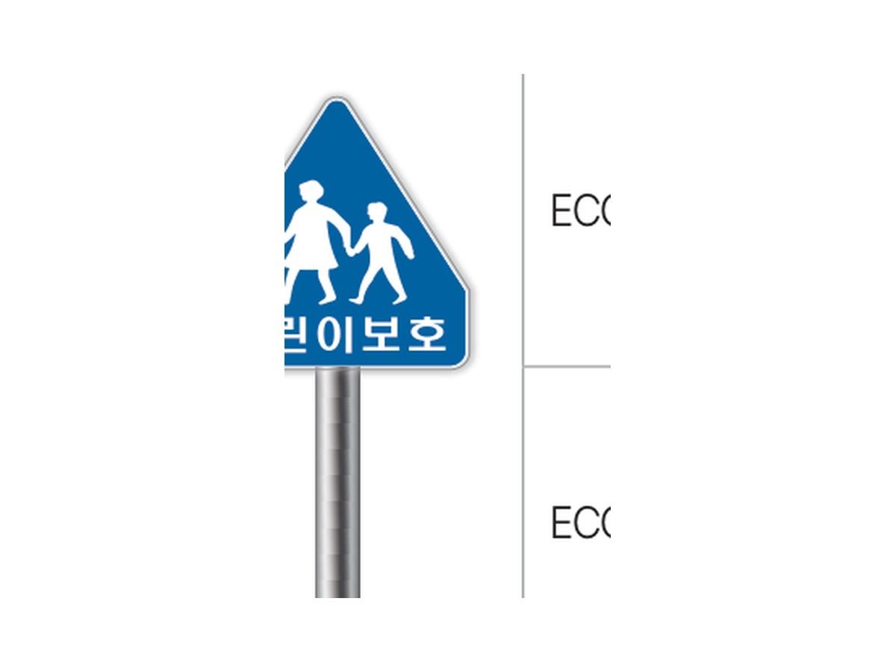
ECO-TS600-CW5횡단보도표지식별번호 25235501크기 600×690 · 900×1035×48mm소비전력 -카탈로그 76-77P / PDF 39공통 이미지ok
ECO-TS900-CW5횡단보도표지식별번호 25235502크기 600×690 · 900×1035×48mm소비전력 -카탈로그 76-77P / PDF 39공통 이미지ok
ECO-TS600-SW5횡단보도표지식별번호 25235532크기 600×690 · 900×1035×48mm소비전력 -카탈로그 76-77P / PDF 39공통 이미지ok
ECO-TS900-SW5횡단보도표지식별번호 25235534크기 600×690 · 900×1035×48mm소비전력 -카탈로그 76-77P / PDF 39공통 이미지ok
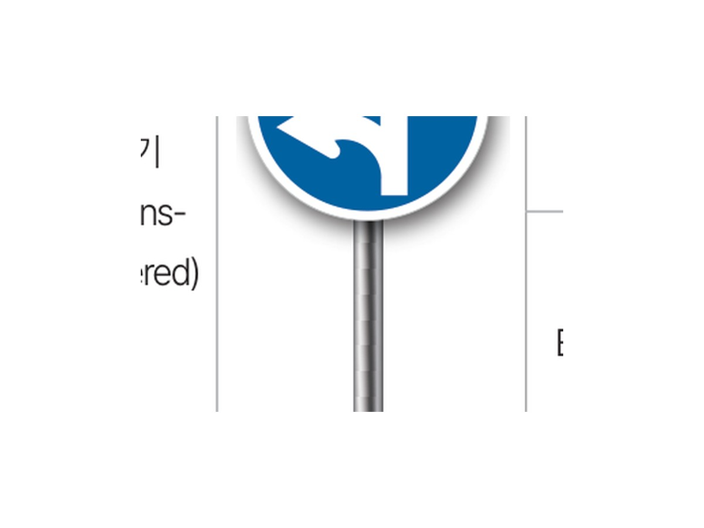
ECO-TS600-CWI회전교차로표지식별번호 25235497크기 Ø600 · Ø900×48mm소비전력 -카탈로그 76-77P / PDF 39공통 이미지ok
ECO-TS900-CWI회전교차로표지식별번호 25235499크기 Ø600 · Ø900×48mm소비전력 -카탈로그 76-77P / PDF 39공통 이미지ok
ECO-TS600-SWI회전교차로표지식별번호 25235518크기 Ø600 · Ø900×48mm소비전력 -카탈로그 76-77P / PDF 39공통 이미지ok
ECO-TS900-SWI회전교차로표지식별번호 25235523크기 Ø600 · Ø900×48mm소비전력 -카탈로그 76-77P / PDF 39공통 이미지ok
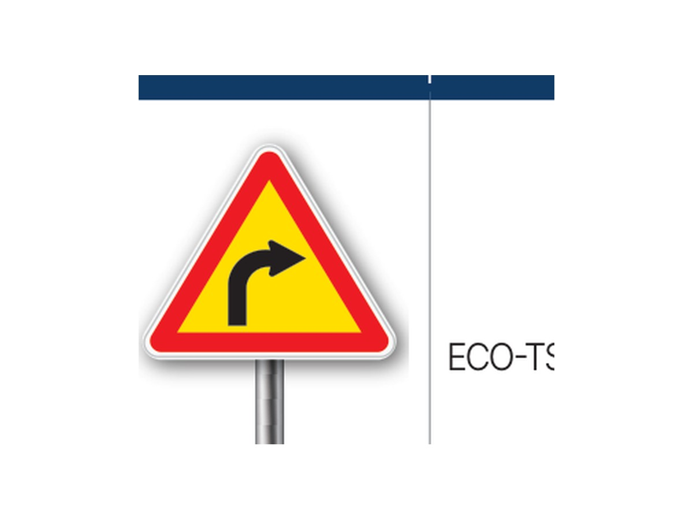
ECO-TS900-CWW우로굽은도로주의표지식별번호 25235487크기 900×900×48mm소비전력 -카탈로그 76-77P / PDF 39공통 이미지ok
ECO-TS900-SWW우로굽은도로주의표지식별번호 25235511크기 900×900×48mm소비전력 -카탈로그 76-77P / PDF 39공통 이미지ok